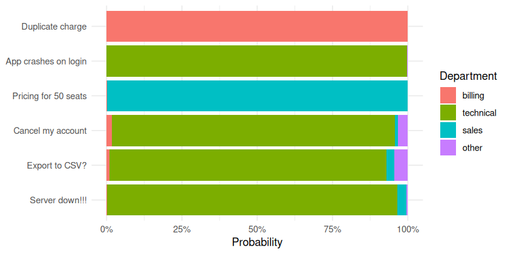

layaR has no tidyverse dependency, but its outputs are ordinary data
frames, factors and lists, so they fit into a dplyr pipeline without any
glue. This article repeats the workflows of
vignette("data-frames", package = "layaR") in tidyverse
style: annotate a tibble in a pipe, summarise the answers, unpack the
probability list-columns, and turn batch results into tidy tables.
questions <- laya_questions(
department = laya_choice(
"Which department should handle this request?",
billing = "invoices, payments, refunds",
technical = "bugs, outages, system errors",
sales = "pricing, new contracts",
other = "everything else"
),
urgency = laya_score("How urgent is this request?",
c("not urgent", "soon", "critical deadline or blocking issue")),
churn_risk = laya_noul("Does the customer say they will cancel or leave?")
)
tickets <- tibble(
id = 1:6,
subject = c("Duplicate charge", "App crashes on login", "Pricing for 50 seats",
"Cancel my account", "Export to CSV?", "Server down!!!"),
body = c(
"We were billed twice for March. Refund it or we cancel.",
"Since the last update the app closes as soon as I log in.",
"We're a team of 50 and want a quote for the annual plan.",
"Your service has been unreliable for months. Please close my account.",
"Is there a way to export my reports to CSV?",
"Production is down and our customers can't check out. Fix this now."
)
)Annotating in a pipe
laya_annotate() takes the data first, so it drops
straight into a pipe. A tibble goes in and a tibble comes out, with the
answers added as columns:
annotated <- tickets |>
laya_annotate(questions, state = c("subject", "body"))
annotated |> select(-subject, -body)
#> # A tibble: 6 × 7
#> id department department_confidence urgency urgency_confidence churn_risk
#> <int> <fct> <dbl> <dbl> <dbl> <dbl>
#> 1 1 billing 1 1.84 0.586 0.600
#> 2 2 technical 0.987 1.83 0.572 0.504
#> 3 3 sales 0.994 1.61 0.305 0.0227
#> 4 4 technical 0.791 1.84 0.593 0.988
#> 5 5 technical 0.746 1.65 0.348 0.0034
#> 6 6 technical 0.875 1.93 0.776 0.98
#> # ℹ 1 more variable: churn_risk_confidence <dbl>state takes the column names as strings
(c("subject", "body")), not bare names: write
state = c("subject", "body"), not
state = c(subject, body).
A choice question gives a factor whose levels are the options in
order, so count() keeps them in that order. Add
.drop = FALSE to show options no row chose:
annotated |> count(department, .drop = FALSE)
#> # A tibble: 4 × 2
#> department n
#> <fct> <int>
#> 1 billing 1
#> 2 technical 4
#> 3 sales 1
#> 4 other 0A yes/no answer is a probability, so filtering on it is a threshold:
annotated |>
filter(churn_risk > 0.5) |>
arrange(desc(churn_risk)) |>
select(id, subject, churn_risk)
#> # A tibble: 4 × 3
#> id subject churn_risk
#> <int> <chr> <dbl>
#> 1 4 Cancel my account 0.988
#> 2 6 Server down!!! 0.98
#> 3 1 Duplicate charge 0.600
#> 4 2 App crashes on login 0.504And the usual grouped summaries work:
Unpacking the probabilities
probabilities = TRUE adds an
<id>_probabilities list-column per question, each
element a named numeric vector. tidyr::unnest_wider()
spreads one into a column per option:
with_probs <- tickets |>
laya_annotate(questions, state = c("subject", "body"), probabilities = TRUE)
with_probs |>
select(id, department_probabilities) |>
unnest_wider(department_probabilities)
#> # A tibble: 6 × 5
#> id billing technical sales other
#> <int> <dbl> <dbl> <dbl> <dbl>
#> 1 1 1 0 0 0
#> 2 2 0.0003 0.998 0.0003 0.0017
#> 3 3 0.0005 0.0001 0.999 0.0004
#> 4 4 0.0184 0.939 0.0091 0.0338
#> 5 5 0.0087 0.92 0.0254 0.046
#> 6 6 0.0008 0.963 0.0319 0.0039A score question has one column per level, and a yes/no question has
false and true:
with_probs |>
select(id, urgency_probabilities) |>
unnest_wider(urgency_probabilities)
#> # A tibble: 6 × 4
#> id `not urgent` soon `critical deadline or blocking issue`
#> <int> <dbl> <dbl> <dbl>
#> 1 1 0.0071 0.145 0.848
#> 2 2 0.0065 0.156 0.838
#> 3 3 0.0327 0.328 0.639
#> 4 4 0.004 0.149 0.847
#> 5 5 0.025 0.298 0.678
#> 6 6 0.0024 0.0607 0.937unnest_longer() gives one row per option instead, the
shape grouped summaries and plots want:
with_probs |>
select(id, department_probabilities) |>
unnest_longer(department_probabilities, indices_to = "option",
values_to = "probability")
#> # A tibble: 24 × 3
#> id option probability
#> <int> <chr> <dbl>
#> 1 1 billing 1
#> 2 1 technical 0
#> 3 1 sales 0
#> 4 1 other 0
#> 5 2 billing 0.0003
#> 6 2 technical 0.998
#> 7 2 sales 0.0003
#> 8 2 other 0.0017
#> 9 3 billing 0.0005
#> 10 3 technical 0.0001
#> # ℹ 14 more rowsAbstaining on uncertain rows
min_confidence compares its threshold with the
confidence in each answer given (for a choice question, the chosen
option’s probability) and adds an <id>_abstained
column. answer_confidence = TRUE adds the number it
compared:
gated <- tickets |>
laya_annotate(questions["department"], state = c("subject", "body"),
min_confidence = 0.99, answer_confidence = TRUE)
gated |>
select(id, department, department_answer_confidence, department_abstained)
#> # A tibble: 6 × 4
#> id department department_answer_confidence department_abstained
#> <int> <fct> <dbl> <lgl>
#> 1 1 billing 1 FALSE
#> 2 2 technical 0.998 FALSE
#> 3 3 sales 0.999 FALSE
#> 4 4 technical 0.939 TRUE
#> 5 5 technical 0.92 TRUE
#> 6 6 technical 0.963 TRUEThe answer is kept even when the model abstains, so you choose what to do with uncertain rows, for example send them to a person:
gated |>
mutate(route = if_else(department_abstained, "human review", as.character(department))) |>
count(route)
#> # A tibble: 4 × 2
#> route n
#> <chr> <int>
#> 1 billing 1
#> 2 human review 3
#> 3 sales 1
#> 4 technical 1Batch results as tidy tables
laya_predict_batch() returns a list of full results, one
per state. as.data.frame() turns it into a long table with
one row per state and question, and laya_probabilities()
gives one row per option. Both are plain data frames;
as_tibble() makes them tibbles.
batch <- laya_predict_batch(tickets |> select(subject, body), questions, progress = FALSE)
long <- as_tibble(as.data.frame(batch))
long
#> # A tibble: 18 × 9
#> state_id id type answer value confidence answer_confidence act_probability
#> <int> <chr> <chr> <chr> <dbl> <dbl> <dbl> <dbl>
#> 1 1 department choice billing 1 1 1 1
#> 2 1 urgency score 1.84 1.84 0.586 0.848 1
#> 3 1 churn_risk noul TRUE 0.600 0.600 0.600 1
#> 4 2 department choice technic… 0.998 0.987 0.998 1
#> 5 2 urgency score 1.83 1.83 0.572 0.838 1
#> 6 2 churn_risk noul TRUE 0.504 0.504 0.504 1
#> 7 3 department choice sales 0.999 0.994 0.999 1
#> 8 3 urgency score 1.61 1.61 0.305 0.639 1
#> 9 3 churn_risk noul FALSE 0.0227 0.977 0.977 1
#> 10 4 department choice technic… 0.939 0.791 0.939 1
#> 11 4 urgency score 1.84 1.84 0.593 0.847 1
#> 12 4 churn_risk noul TRUE 0.988 0.988 0.988 1
#> 13 5 department choice technic… 0.92 0.746 0.92 1
#> 14 5 urgency score 1.65 1.65 0.348 0.678 1
#> 15 5 churn_risk noul FALSE 0.0034 0.997 0.997 1
#> 16 6 department choice technic… 0.963 0.875 0.963 1
#> 17 6 urgency score 1.93 1.93 0.776 0.937 1
#> 18 6 churn_risk noul TRUE 0.98 0.98 0.98 1
#> # ℹ 1 more variable: abstention <chr>answer is text, so answers of every type fit in one
column; value is the number behind it (for a choice
question, the chosen option’s probability). pivot_wider()
turns the long table into one row per state:
long |>
select(state_id, id, answer) |>
pivot_wider(names_from = id, values_from = answer)
#> # A tibble: 6 × 4
#> state_id department urgency churn_risk
#> <int> <chr> <chr> <chr>
#> 1 1 billing 1.84 TRUE
#> 2 2 technical 1.83 TRUE
#> 3 3 sales 1.61 FALSE
#> 4 4 technical 1.84 TRUE
#> 5 5 technical 1.65 FALSE
#> 6 6 technical 1.93 TRUEThe per-option table is the right shape for ggplot2:
laya_probabilities(batch) |>
filter(id == "department") |>
mutate(option = factor(option, levels = names(questions$department$criteria)),
ticket = factor(tickets$subject[state_id], levels = rev(tickets$subject))) |>
ggplot(aes(probability, ticket, fill = option)) +
geom_col(position = position_stack(reverse = TRUE)) +
scale_x_continuous(labels = scales::percent) +
labs(x = "Probability", y = NULL, fill = "Department") +
theme_minimal()
Working with result lists using purrr
Each result is a list, so purrr’s typed maps pull out single values.
This is the tidyverse version of the sapply() /
vapply() code in the other vignettes:
batch |> map_dbl(\(r) r$answers$churn_risk$noul)
#> [1] 0.6004 0.5041 0.0227 0.9880 0.0034 0.9800
batch |> map_chr(\(r) r$answers$department$choice)
#> [1] "billing" "technical" "sales" "technical" "technical" "technical"A good use is comparing question wordings against a few labelled
examples, as
vignette("writing-questions", package = "layaR")
recommends:
examples <- tibble(
text = c(
"Duplicate charge. We were billed twice for March. Refund it or we cancel.",
"Your service has been unreliable for months. Please close my account.",
"Please refund the duplicate today or we will cancel our plan.",
"Since the last update the app closes as soon as I log in.",
"We're a team of 50 and want a quote for the annual plan."
),
cancels = c(TRUE, TRUE, TRUE, FALSE, FALSE)
)
wordings <- laya_questions(
threaten = laya_noul("Does the user threaten to cancel or leave?"),
say = laya_noul("Does the customer say they will cancel or leave?"),
mention = laya_noul("Does the customer mention cancelling their plan, subscription or account?")
)
scored <- examples |>
laya_annotate(wordings, state = "text", confidence = FALSE) |>
pivot_longer(c(threaten, say, mention), names_to = "wording", values_to = "p")
scored |>
group_by(wording) |>
summarise(correct = sum((p > 0.5) == cancels),
min_p_when_true = min(p[cancels]),
max_p_when_false = max(p[!cancels]))
#> # A tibble: 3 × 4
#> wording correct min_p_when_true max_p_when_false
#> <chr> <int> <dbl> <dbl>
#> 1 mention 4 0.963 0.638
#> 2 say 5 0.682 0.429
#> 3 threaten 2 0.0239 0.0109laya_annotate() with one question per wording does the
same job as the sapply() loop, and the long table makes it
easy to score each wording.